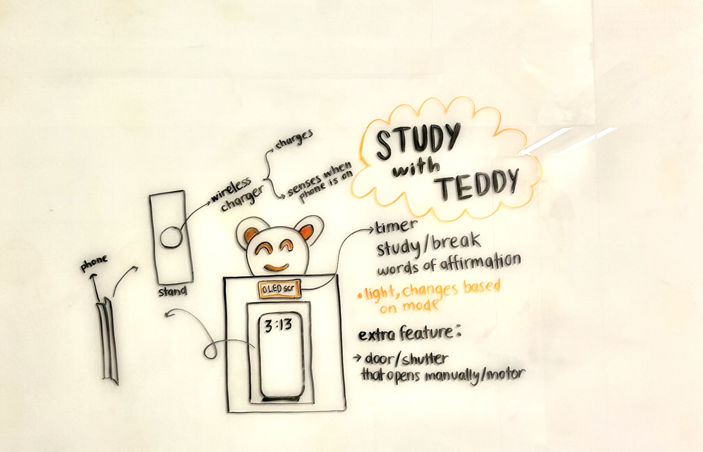
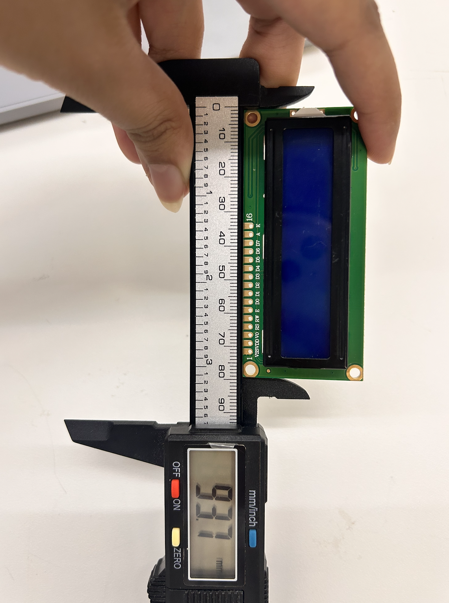
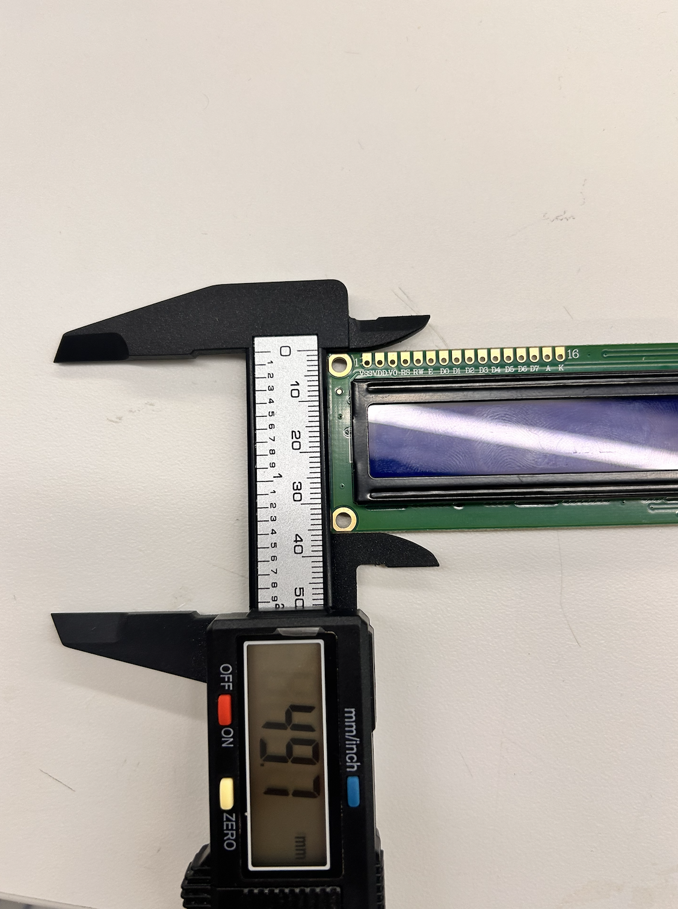
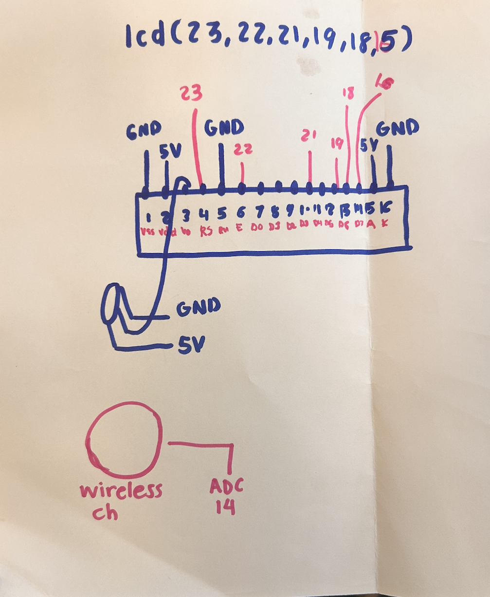
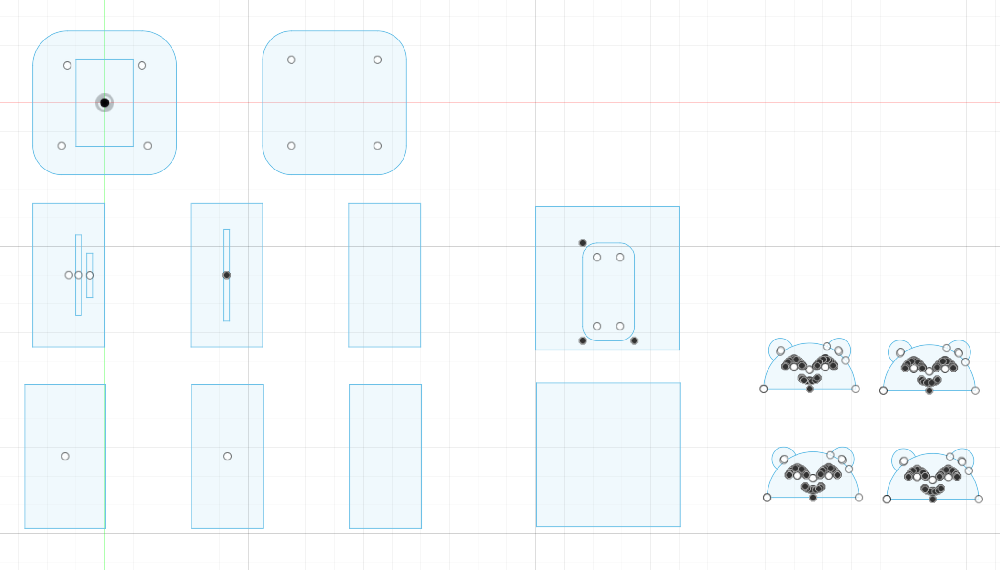
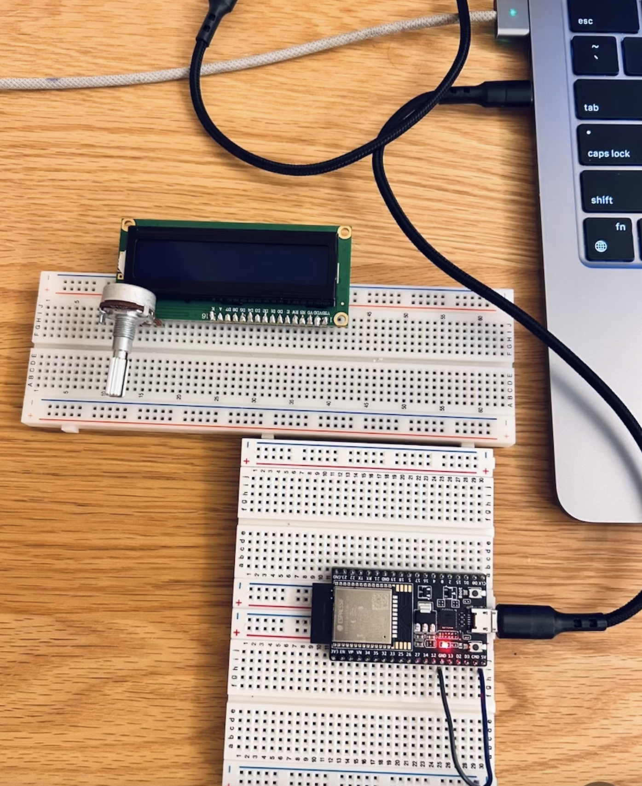
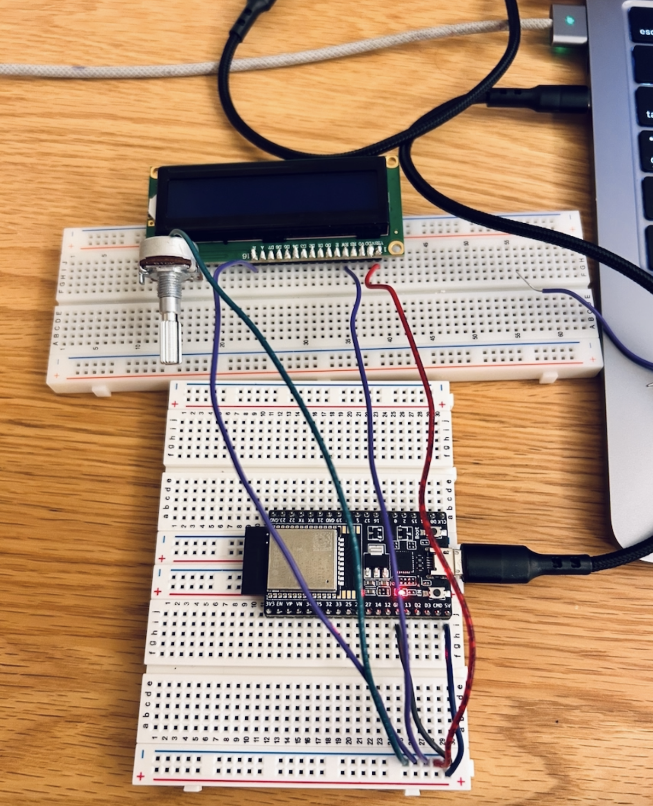
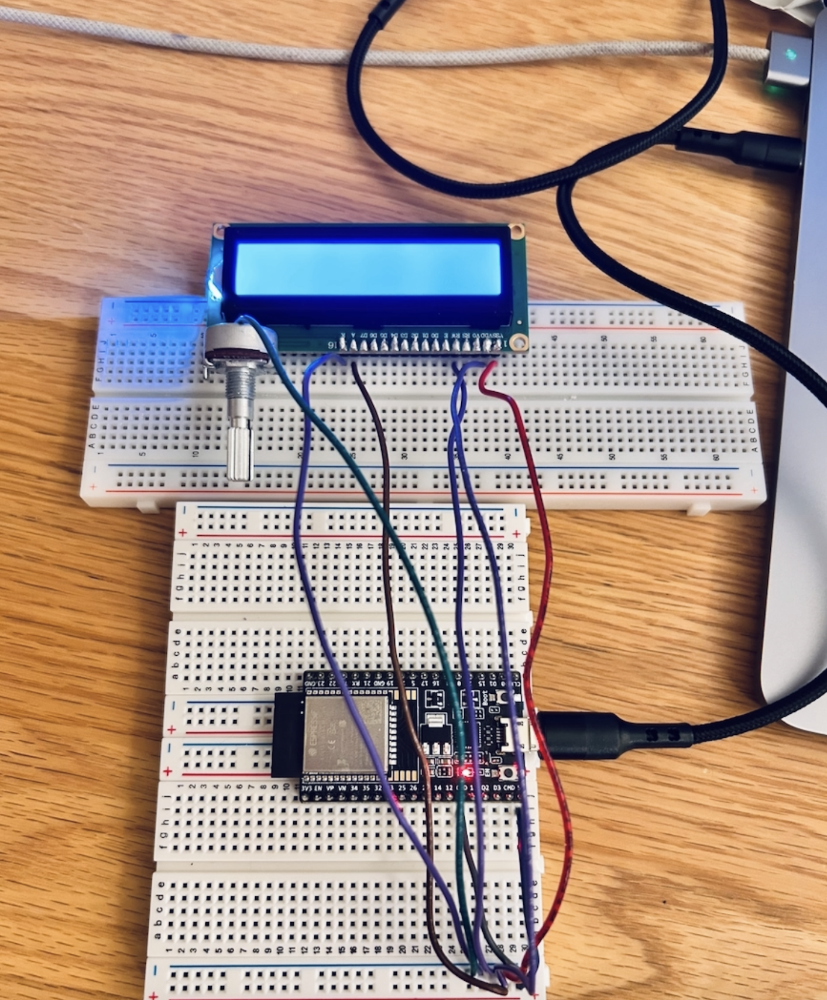
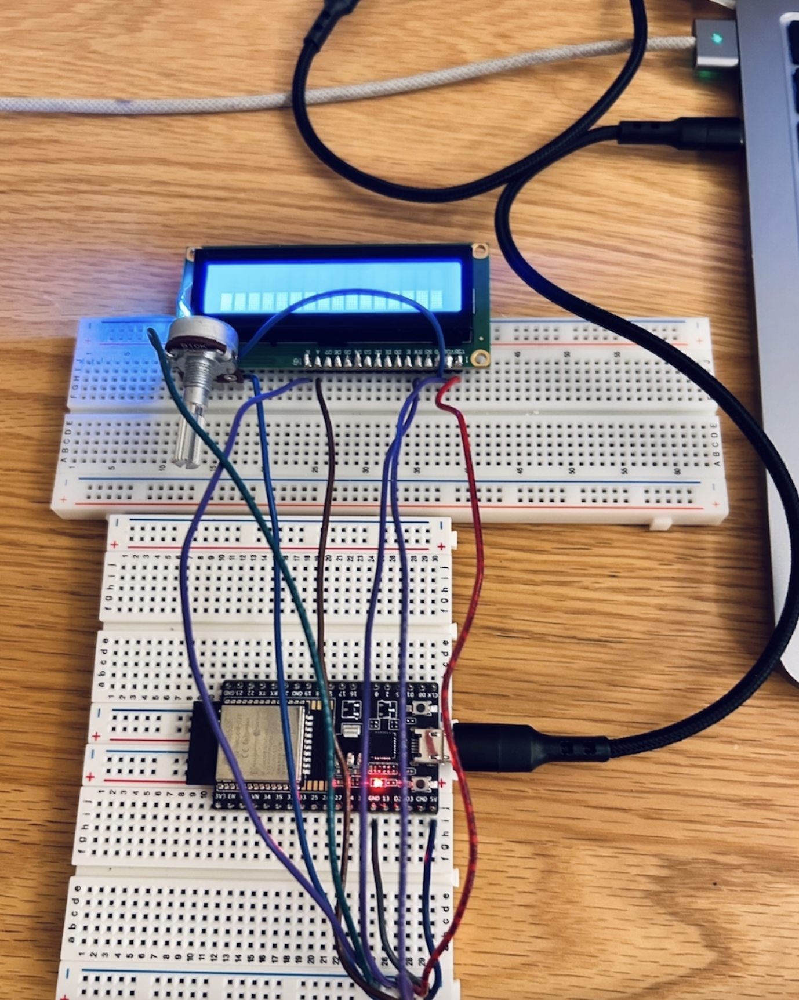
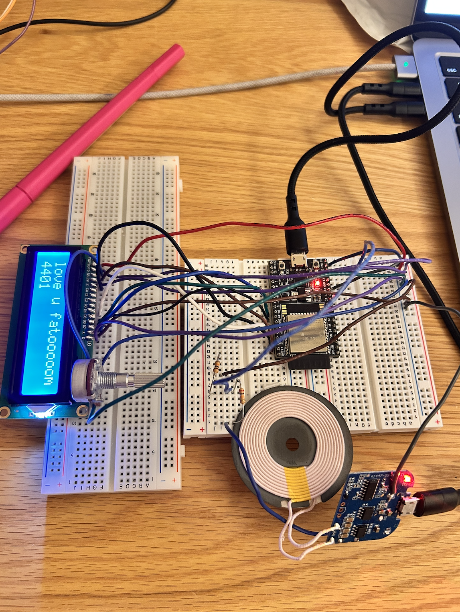

<div class="textcontainer">
<p class="margin"> </p>
<h3>Week 7: Electronic Outputs</h3>
<h4> I would like to say that even though this might not seem like much progress, I have devoted most of my time into this for the past few days, and I/ am proud of my work but still looking forward to pushing my ideas byond my horizon. Shoutout to Bobby for his help, could not have done it wihout his guidance. This was also my first time ever hooking up a tool on the breadboard and coding it while knowing absolutely nothing about it, so that was quite the journey! I did waste so much time on silly mistakes, but it is safe to conclude that I am avoiding those pitfalls in the future. </h4>
<br> </br>

<br>



<h5>
1. Designing the Teddy Box (Fusion 360 + Laser Cutting)
The laser cutting is still pending as I am brainstorming a smarter and more space-efficient pocket case that can hold the breadboard and charger while remaining visually fun and minimal. I plan to cut the prototype out of cardboard, then later build a polished version using either acrylic or wood. It will have:
A front LCD screen window, USB-C port opening and possibly pause and reset buttons. </h5>
<br> </br>

<h5>
2. Input Device: Wireless Phone Charger as Sensor
Objective: Use a wireless charger’s analog pin (14) to detect if a phone is placed on it and actively charging.
Materials:
Wireless charger module (5V, analog signal out)
ESP32 Dev Board
Jumper wires
Wiring:
Charger analog signal pin → ESP32 pin 14 (ADC)
Charger VCC → ESP32 5V
Charger GND → ESP32 GND
Logic:
The analog value is sampled repeatedly. The board determines if a phone is truly charging (not just hovering nearby). When the charger reads around 5.5V , we know a phone is actively charging.
Feature:
The timer only starts when a phone is confirmed as charging. This is the heart of my project. I think I did a solid job with this logic—it works well overall—but there are minor glitches when the value briefly spikes, so I’ll continue improving this logic. </h5>
<br> </br>

<br>



<h5>
3. Output Device: LCD Timer Display (16x2)
This was my first time ever using an LCD screen, so I'm pretty proud of myself! The display should show study instructions and a Pomodoro-style 25 minute countdown timer
The display updates every second using millis() logic, without using the delay() function! </h5>
<br> </br>

<h5>
4. Code Structure (C++ Style, No delay())
The logic is modular and responsive:
Uses a rolling average on the charger pin to detect real charging state
Uses a simple state machine to track transitions between "waiting," "charging," and "timer" modes
LCD updates occur only when state changes or countdown ticks
<html lang="en">
<head>
<meta charset="UTF-8">
<title>Teddy Study Buddy</title>
<!-- Light Theme Highlight.js -->
<link rel="stylesheet" href="https://cdnjs.cloudflare.com/ajax/libs/highlight.js/11.9.0/styles/arduino-light.min.css">
<script src="https://cdnjs.cloudflare.com/ajax/libs/highlight.js/11.9.0/highlight.min.js"></script>
<script>hljs.highlightAll();</script>
<!-- Custom Styling -->
<style>
body {
background-color: #fdf6e3; /* beige background */
}
pre code {
background-color: transparent !important;
color: #2c2c2c;
font-family: 'Courier New', monospace;
border: 1px solid #ddd;
padding: 1em;
display: block;
border-radius: 8px;
}
</style>
</head>
<body>
<br>
<h4>Here is a code Snippet!</h4>
<pre><code class="language-cpp">
#include <LiquidCrystal.h>
const int rs = 23, en = 22, d4 = 21, d5 = 19, d6 = 18, d7 = 16;
LiquidCrystal lcd(rs, en, d4, d5, d6, d7); // Charger pin and thresholds
const int chargerPin = 14;
const int chargeOnThreshold = 520;
const int chargeOffThreshold = 480;
// Rolling average filter
const int numSamples = 20;
int samples[numSamples] = {0};
int sampleIndex = 0;
// Timer logic
const unsigned long studyDuration = 25 * 60; // seconds
unsigned long countdownStart = 0;
unsigned long chargingDetectedTime = 0;
bool countdownRunning = false;
// States
enum State {
WAITING_FOR_PHONE,
CHARGING_DETECTED,
TIMER_RUNNING
};
State currentState = WAITING_FOR_PHONE;
State lastDisplayedState = TIMER_RUNNING;
void setup() {
lcd.begin(16, 2);
pinMode(chargerPin, INPUT);
lcd.setCursor(0, 0);
lcd.print("Waiting for");
lcd.setCursor(0, 1);
lcd.print("phone...");
</code></pre>
</body>
</html>
</h5>
<br> </br>
<h5> Oscilloscope:
I has already used an oscilloscope for the last assignment which was pretty helpful! It halped me determine the voltage that I should include in my code to determine wether the phone is charging or not </h5>
<br> </br>
<h5> Reflections & Challenges
Despite the project’s seemingly simple idea, building the working prototype took many hours of testing, rewiring, and debugging. I made the mistake of wiring the potentiometer at a 90° angle to the LCD instead of in parallel, it took hours to discover this small error, and the LCD wouldn’t display anything until fixed.
My proudest achievement was implementing the phone detection feature. Even though it’s not perfect yet, I created logic that reads analog voltage, averages it, and responds with meaningful states. I’ll continue refining the detection logic to make it even better.
</h5>
<br> </br>
</div>